// MI-piackutatás · közvélemény · trend
3000 avatar, saját hangulattal, akik leképezik Magyarországot — minden megyét, településtípust, korosztályt és jövedelmi szintet.
Mintaeredmény
Leggyakoribb indoklások
Illusztráció: a valódi riport szegmenseket, idézeteket és javaslatokat is tartalmaz.
3000 avatar, saját hangulattal — Magyarország kicsiben.
Minden avatarnak saját élete és saját, változó hangulata van: a hírek, az évszak, az árak és a fizetésnap is hat rá. Együtt az egész országot leképezik — minden megyét, településtípust, korosztályt, jövedelmi és iskolai szintet, életmódot. Az alábbi avatarok rajzolt, szintetikus figurák, nem valós személyek.
Kata, 34 · #1000
Győr · könyvelő
😊 hangulat: derűlátó, de ártérzékeny
Laci, 58 · #1377
Nyíregyháza környéki község · gazdálkodó
😟 hangulat: aggódó — a rezsi miatt
Bence, 22 · #1754
Budapest, XI. ker. · egyetemista
🤩 hangulat: lelkes, trendkövető
Erzsi, 71 · #2131
Kecskemét · nyugdíjas tanár
🙂 hangulat: nyugodt, óvatos költő
Gábor, 45 · #2508
Miskolc · villanyszerelő
😐 hangulat: fáradt, de bizakodó
Nóri, 29 · #2885
Pécs · grafikus, szabadúszó
😄 hangulat: kreatív, változékony
A 3000 avatar átlagos hangulata. Változik a hírek, az évszak és az árak hatására.
Válaszd ki, mire van szükséged. Minden ár példa.
1 kérdés, 3000 avatar, összefoglaló + 3 grafikon, percek alatt
Kipróbálom →Termék/ár/szlogen teszt, szegmensek, árérzékenység, javaslatok
Kipróbálom →Társadalmi/közéleti kérdés, régiós és demográfiai bontás
Kipróbálom →Heti hírreakció- és trendjelentés a te témáidra
Kipróbálom →Számok, bontások, grafikonok, idézetek és javaslatok. Minden adat Mintaadat.
41% vásárolna, optimális ár 3 990 Ft, legnyitottabb: 18–29 évesek, Közép-Mo.
6 szegmens: városi fiatalok, vidéki családosok, nyugdíjasok, …
„Drágának tartom, de a gyerekeknek megvenném.” — avatar #1842
Árazás 3 990 Ft-on, kampányfókusz: Facebook + helyi média vidéken
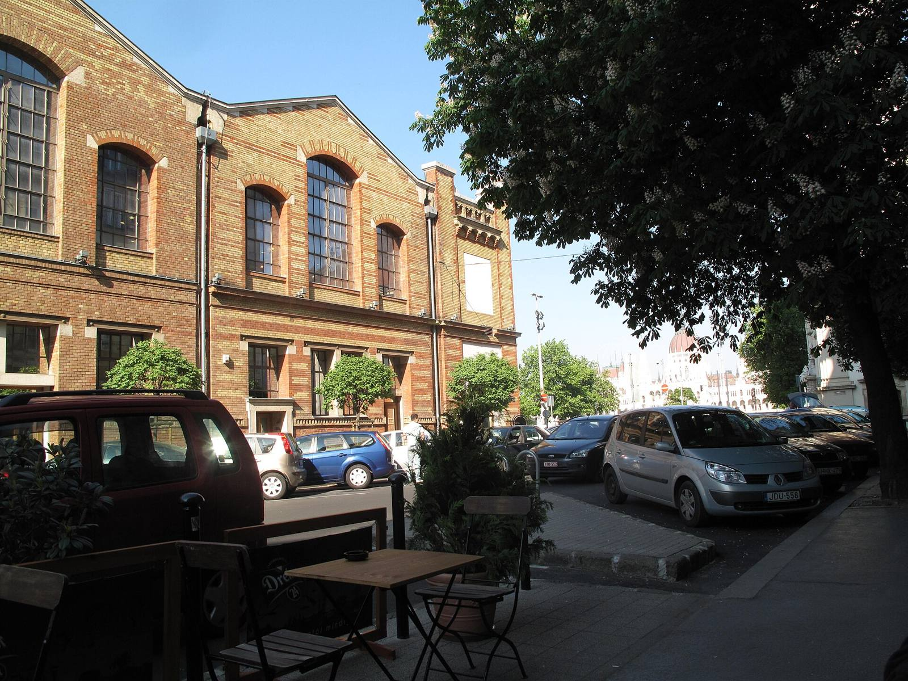
Új termék, ár vagy akció kipróbálása, mielőtt legyártod.
Kampány-előteszt és szlogen A/B gyorsan, ügyfélnek bemutatható riporttal.
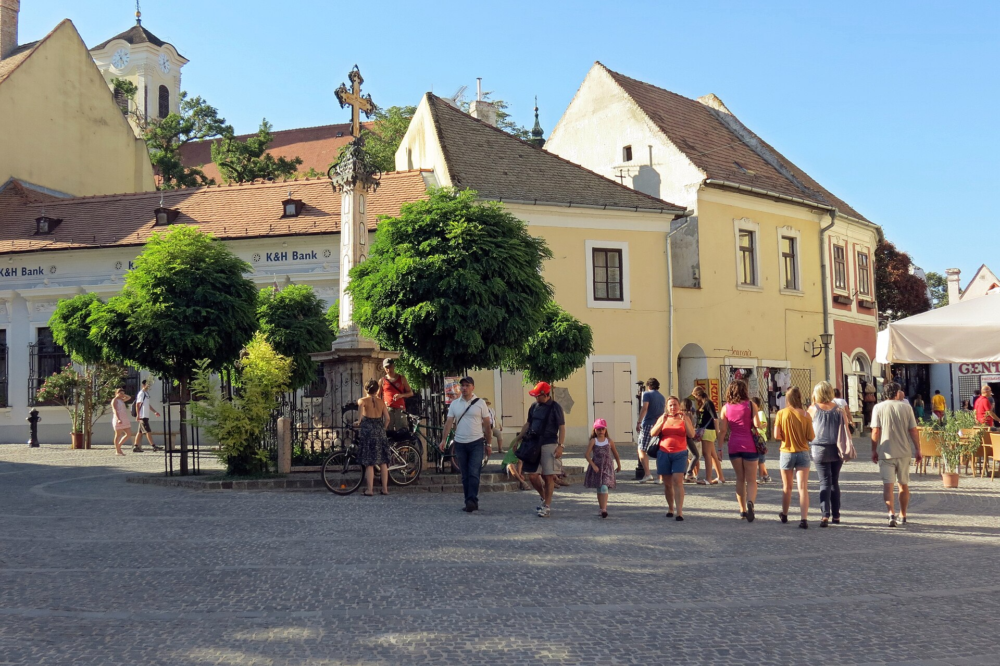
Jegyár, helyszín, fellépő: kire mennének el és mennyiért?
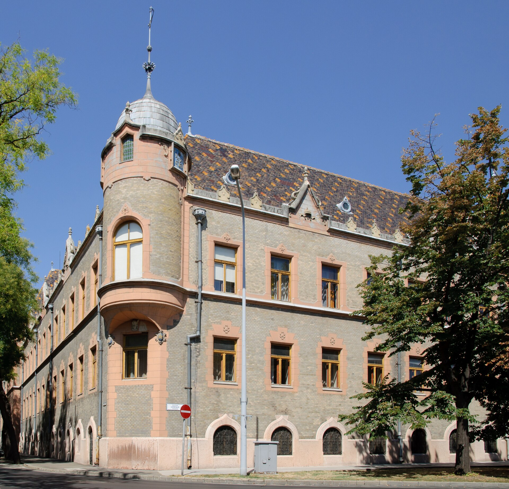
Közéleti kérdések, helyi fejlesztések fogadtatása — szimulált hangulatkép.
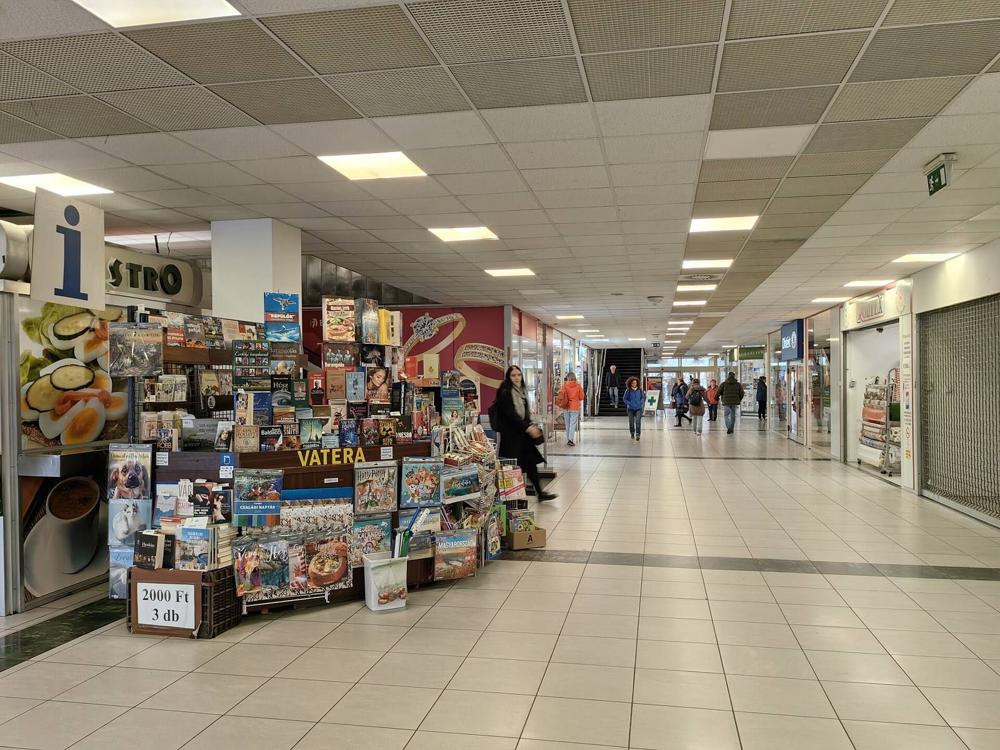
Piac-validálás és célcsoport-keresés napok helyett percek alatt.
Magyar vállalkozások és települések kérdéseire.
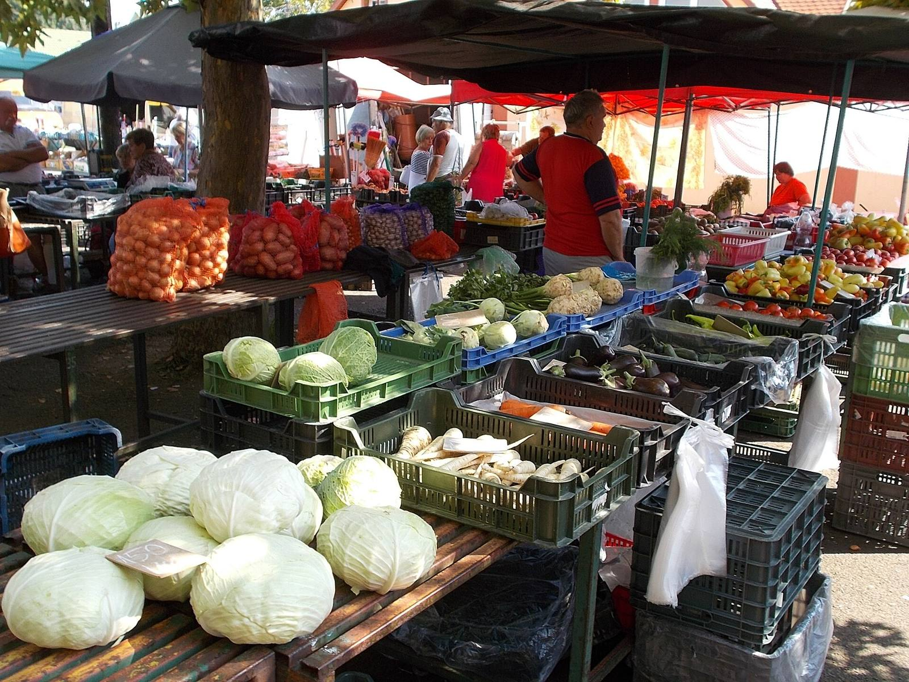
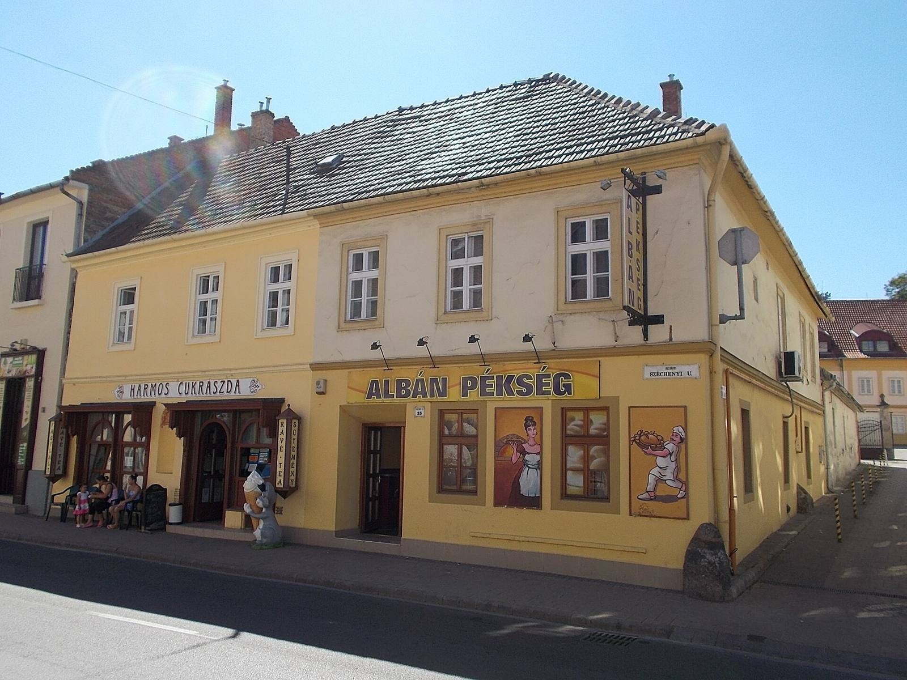
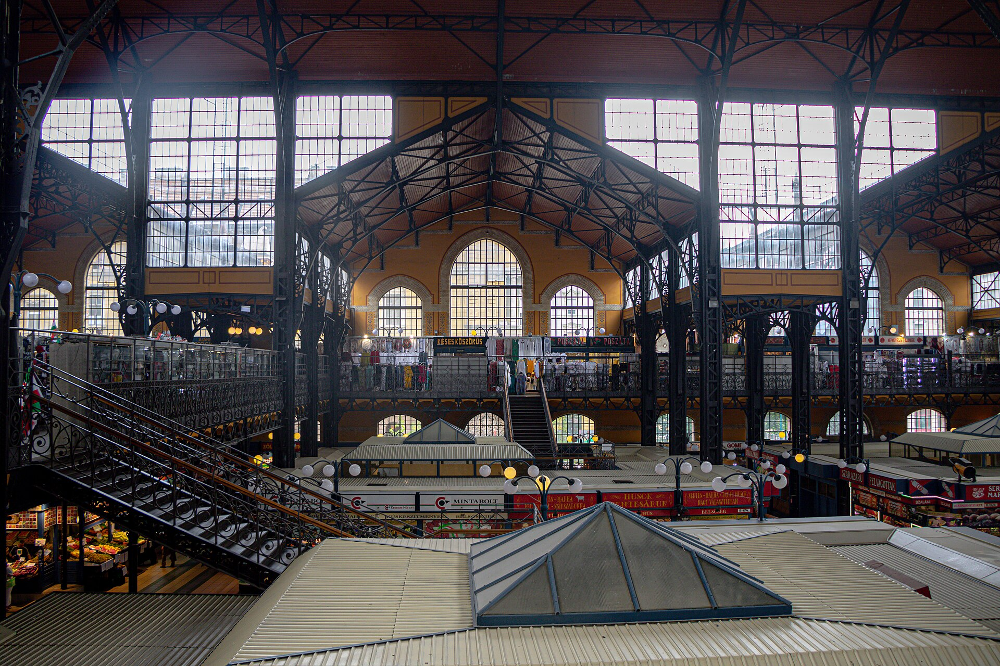
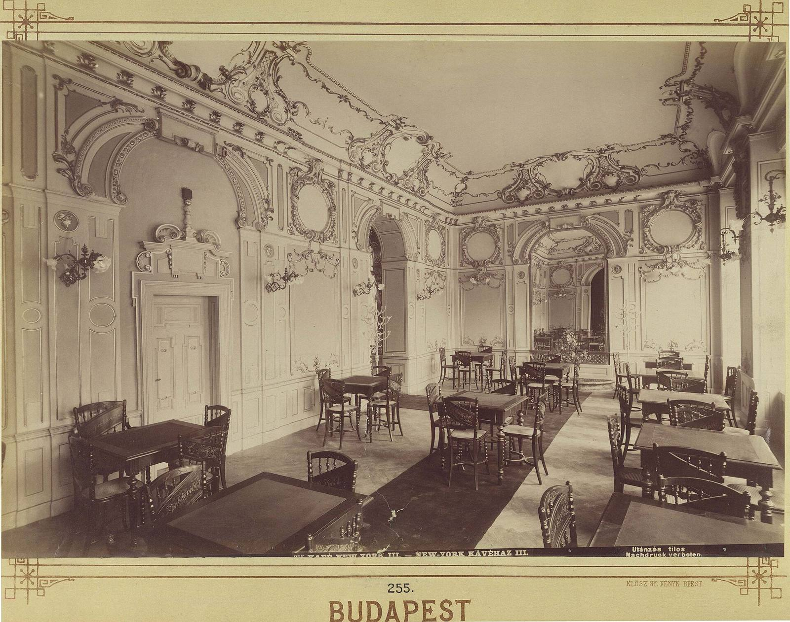
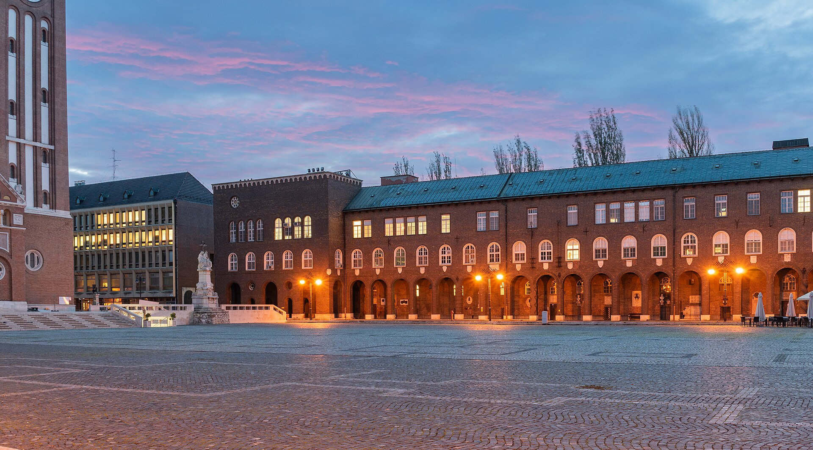
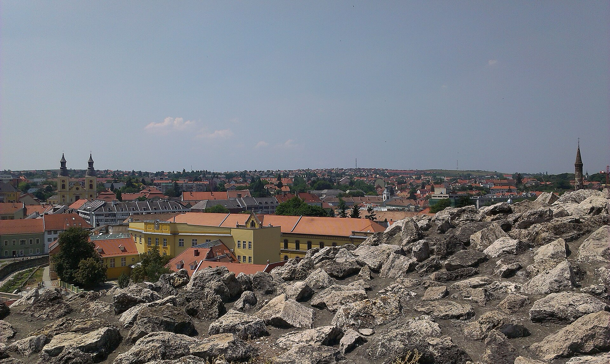
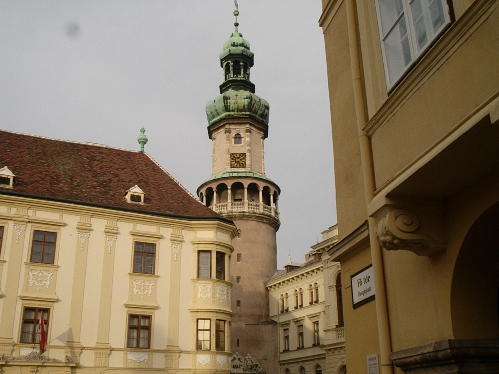
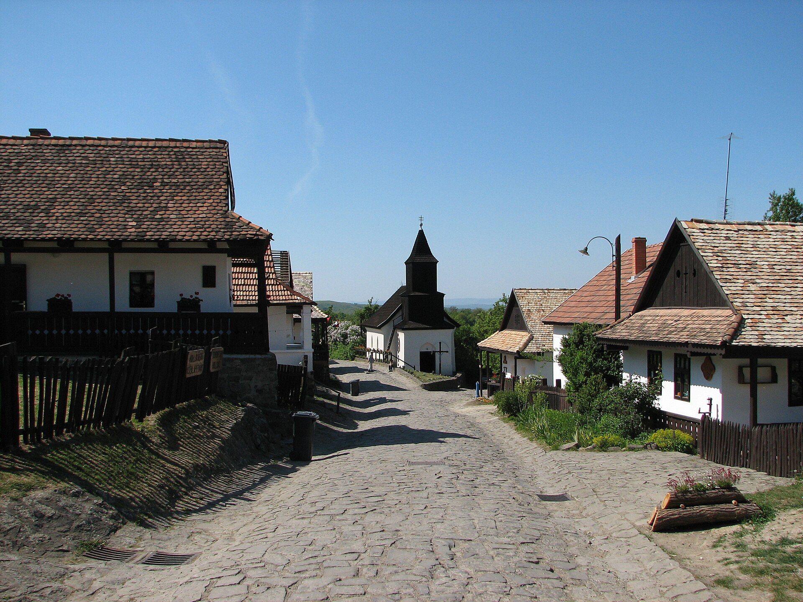
Nem. 3000 szintetikus, MI-alapú avatar válaszol, a magyar népesség arányait követve. Gyors és olcsó, de nem helyettesíti a reprezentatív felmérést.
Gyorskérdésnél perceken belül, teljes kutatásnál jellemzően 1–2 napon belül.
Igen, közéleti és véleménykérdéseket is — szimulált hangulatképként, nem választási előrejelzésként.
Online riportot és PDF-et: számok, demográfiai bontás, grafikonok, jellemző indoklások, javaslatok.
A feltüntetett árak példák; a végleges árlista hamarosan.
Igen — a kutatás eredményeire építve.
Már 9 900 Ft-tól (példa ár). Gyors, olcsó, szimulált panel.
Kutatás indítása →Képek: Wikimedia Commons, szabad licencek — forrásmegjelölés. Minden szám és grafikon mintaadat, az árak példák. Az avatarok szintetikusak, nem valós személyek; az eredmény nem reprezentatív felmérés.